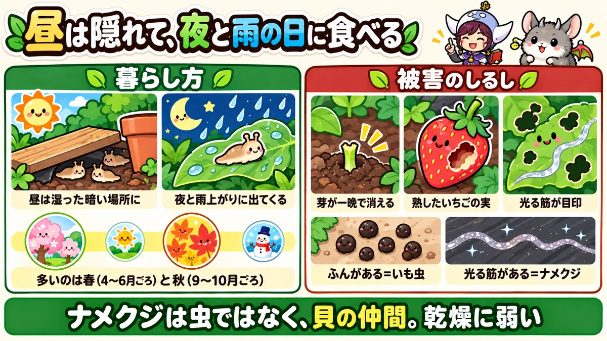
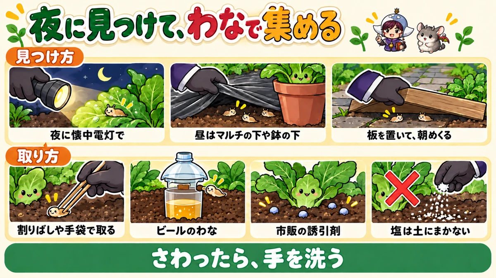
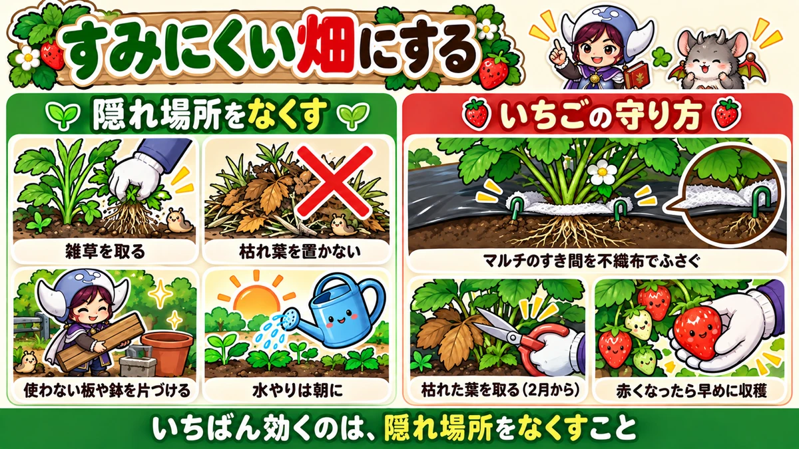

Slugs in the vegetable garden 🐌 Finding them at night, beer traps, taking away their hiding places, and protecting strawberries
🐌 "My bean seedlings came up yesterday — this morning only the stumps are left."
🐌 "There's a scooped-out hole in every ripe strawberry."
🐌 "I never see anything eating my plants, just shiny trails on the mulch."
Hello, I'm Eiko. Eight years of growing vegetables organically and without pesticides, and a teaching licence in science.
Slugs are hardly ever seen in daylight, so they're the classic "I don't know what ate it" problem. They're also slimy enough that many of us put off dealing with them. But once you know how they live, it becomes clear where and when to act.
This article covers how slugs live, recognising their damage, finding them, removing them, prevention, protecting strawberries, and staying safe when you handle them — with a short note on snails and woodlice at the end.
Signs: new shoots, seedlings and young leaves eaten irregularly from the edges; holes with rounded edges; scooped-out holes in ripe strawberries; trails that dry to a silvery shine around the damage and on the mulch.
When: damp spring (roughly April–June in central Japan) and autumn (September–October), especially in long wet spells; at night, after rain, and on damp overcast days.
Where they hide: under mulch film and in the gaps of its planting holes; under boards, blocks, stones, pots and planters; at the base of weeds; under dead leaves and cut grass; around planter saucers.
What to do: look at night or after rain and pick them off; use beer traps or slug pellets; take away hiding places; seal the mulch gaps round strawberries with fleece; wash your hands after touching them, and wash nibbled vegetables well.

What this diagram says （図解の文字）
- Hiding by day, eating at night and on rainy days
- "How they live": "by day, in damp, dark places" ／ "out at night and after rain" ／ "most common in spring (around April–June) and autumn (around September–October)"
- "Signs of damage": "seedlings gone overnight" ／ "ripe strawberries" ／ "a shiny trail is the giveaway"
- "Droppings = caterpillars" ／ "shiny trail = slugs"
- "Slugs aren't insects — they're molluscs, related to shellfish. They can't stand drying out"
① What a slug is
A mollusc, not an insect
Slugs look a bit like bugs, but they're molluscs — the same group as snails, essentially a snail without its shell. With no shell, they have few ways to hold on to their body water, so they're very vulnerable to drying out.
Their skin is coated in slime, which keeps them moist as they glide slowly along. The slime they leave behind dries into the silvery trail you find in the morning.
Active at night and in the rain
Because drying out is dangerous, they stay still in damp, dark places while the sun is up. When the air turns humid at night, they come out and feed. After rain or on damp, overcast days, you may see them moving in daytime too. They're said to have a keen sense of smell and to find food by scent.
Every slug can lay eggs
Each slug has both male and female parts, so when two meet, both can go on to lay eggs. The eggs are small, round, translucent to whitish beads laid in clusters in dark, damp places: in the soil, under pots, under mulch, under dead leaves.
They live for years
Slugs are said to live several years, spending the winter still in the soil or under objects. Once they've settled in a plot they tend to come back every year — so you need to do two things: reduce their numbers, and make the plot a poor place to live.
② Recognising the damage
They go for the soft parts
- Freshly emerged seedlings (beans and peas, leafy greens)
- The leaves of newly planted transplants
- New shoots at the tips of plants
- Ripe strawberries
- Flower petals
A row of seedlings can vanish in a single night. If the growing tip is eaten, the plant can't grow on from there.
Crops most at risk
- Strawberries — the ripe fruit
- Brassicas: Chinese cabbage, cabbage, daikon radish, komatsuna
- Lettuce
- Young aubergine, tomato and pepper plants
- Bean and pea seedlings
- Flowers in the borders
Damage eases as plants grow
The worst damage comes just after seedlings emerge and just after transplanting. A big plant can lose a few leaves without being set back. So the weeks to focus on are the first few after germination and after planting.
Some parts are still targeted later — strawberry fruit, the inside of cabbage and Chinese cabbage outer leaves, the folds of lettuce — so keep checking at harvest time too.
What the damage looks like
Slug damage usually shows as uneven holes with rounded edges, at the leaf margin or in the middle. Around the damage, at the base of the plant or on the mulch, there's a shiny trail. When you find fresh damage in the morning, look for that trail first. If it's there, slugs or snails have been visiting.
Telling it apart from other night feeders
- Slugs and snails: shiny trail around the damage; droppings not obvious
- Armyworms and other caterpillars: black or green pellet droppings on leaves or mulch; no trail
- Cutworms: transplants bitten off at soil level and toppled
- Woodlice (pill bugs): eat seedlings, low leaves and fruit touching the soil; several gathered at the base
If you're unsure, ask two questions: is there a shiny trail, and are there droppings?
Where in the plot damage starts
- The edges next to long grass, fences, walls or the shade of buildings
- Shady spots where the soil is always damp
- Poorly drained areas where water sits after rain
- Near compost heaps or piles of vegetable scraps
- Near boards, blocks and pots left lying about
If the same spot suffers every year, there's a hiding place nearby. Search around it.
③ When they're worst
Slugs are about all year, but they're most noticeable in damp spring and autumn (around April–June and September–October in central Japan), and especially lively in wet spells. In hot, dry midsummer and cold midwinter they stay hidden — though on rainy summer days, or where watering keeps the ground wet, they still come out.
Get ready before spring
As spring warms up, overwintered slugs start moving and eggs hatch, so numbers climb — right when strawberries ripen. Once damage starts, bringing numbers down takes effort. If you have crops to protect in spring, start clearing hiding places from about February.
Through the year (central Japan)
- January–February: slugs lie still under objects and in the soil. Clear away boards and pots; remove dead strawberry leaves
- March: they stir on warm, rainy days. Finish clearing hiding places; seal the mulch gaps round strawberries
- April–June: peak season. Night and after-rain patrols, traps or pellets. Pick strawberries promptly; take extra care after sowing and transplanting
- July–August: few on hot, dry days; still out on wet days and where watering keeps things damp
- September–October: numbers rise again with the autumn rains. Protect autumn-sown greens and new cabbage and Chinese cabbage plants
- November–December: they slow down in the cold. Clear crop debris and dead leaves to cut down winter hiding places
④ Finding them
A torch walk after dark
The surest way is to walk round with a torch after dark. Slugs you never found by day will be gliding over leaves and around the base of plants. In a back garden or on a balcony, a night patrol only takes a few minutes.
Follow the trail
When you find a trail in the morning, follow where it comes from and where it goes. It often leads to a gap in the mulch, the underside of a board, or a patch of long grass. Once you know the hiding place, you can clear it or collect them all there.
Look after rain
After rain and on damp, overcast days, they may be out in daylight. When the rain stops, check the base of plants, the undersides of leaves and the top of the mulch.
By day, look under things
- Lift the edge of the mulch film and look underneath
- Peer into the gaps round the planting holes
- Lift boards, blocks, stones and pots
- Turn over the base of weeds, dead leaves and cut grass
Hiding places often hold clusters of eggs as well. If you find a clump of small translucent-to-white beads, remove it.
Put down a board, lift it in the morning
You can also create the kind of shelter slugs love, on purpose. Lay a board, damp newspaper or cardboard on a path; slugs that roamed at night shelter under it by morning. Lift it and collect them. But don't leave it lying there for good — it becomes their home. Lift it every morning, and clear it away when you're done.

What this diagram says （図解の文字）
- Find them at night, gather them with traps
- "Finding them": "with a torch at night" ／ "by day, under mulch and pots" ／ "lay a board, lift it in the morning"
- "Removing them": "pick off with chopsticks or gloves" ／ "beer trap" ／ "shop-bought slug pellets" ／ "don't scatter salt on the soil"
- "Wash your hands after touching them"
⑤ Removing them
By hand
Pick them up with disposable chopsticks, tweezers or disposable gloves — not bare hands (see "Handling them safely" below). Put them in a bag and tie it so they can't return to the plot.
A beer trap
Slugs are often said to be drawn to the smell of beer. Here's a simple trap:
- Cut an empty plastic bottle at the narrow waist. Use the bottom half as the container and make a few slug-sized holes in the sides.
- Pour a little beer into the bottom.
- Sink it into the soil up to just below the holes, so slugs can crawl in easily.
- Put the cut-off top back on upside down as a roof to keep rain out.
- Check every few days, dispose of the slugs and replace the beer.
One trial found real beer attracted plenty, while low-malt beer-like drinks attracted few. The trap gets smelly — wear gloves, and bag the contents before throwing them away.
Tips for placing traps
- Not right beside the plant you're protecting — on a nearby path, or between the hiding place and the plants
- Give it a roof; rain dilutes the beer
- Use several, depending on the size of the plot
- Empty and refill every few days — if it gets too smelly, other creatures come too
- Judge it by the catch. If the numbers fall, your clearing up is working
Slug pellets
Granular baits for slugs and snails are sold in garden shops. Scattered round the plants, slugs eat them before your vegetables, then stop feeding and numbers fall. Some use ferric (iron) phosphate, a substance also found in nature, and are said to be relatively safe. They take a little while to work, but trials have shown they protect plants from feeding damage. If you use them, always check the label for how and where they can be used.
- Sprinkle the amount on the label thinly around the base — never in heaps
- Re-apply if rain washes them away or they turn soggy
- Take special care where small children or pets can reach
- Keep them off leaves and fruit
What about salt or ash?
Salt makes a slug shrivel — you can use it on the slug in front of you, but never scatter salt on the soil or round plants. Salt left in the soil stops roots taking up water and stunts the crop.
Wood ash or lime round the base is sometimes suggested, on the idea that the powder absorbs their slime. But it stops working once rain or watering wets it, and lime also changes the soil, so don't overdo it.
⑥ Prevention: make the plot a poor place to live
Take away hiding places
The single most effective measure is to remove their daytime hiding places. With nowhere to hide, they struggle to settle in.
- Weed round the beds and the base of plants regularly
- Don't leave dead leaves, cut grass or vegetable scraps on the beds or at the base of plants
- Don't leave unused boards, blocks, pots or plastic sheeting lying in the plot
- Remove old leaves at the base and leaves lying on the soil
Air and drainage
The damper the spot, the more slugs gather. Thin crowded foliage to let air through. In poorly drained spots, raise the beds so water doesn't sit. And water in the morning rather than the evening, so the soil surface isn't soaking wet all night — damp soil at night makes it easy for slugs to get about.
Seal the gaps in the mulch
Under mulch film is dark, damp and cosy; slugs slip out through the gaps round the planting holes to feed. Around plants you want to protect, seal those gaps with fleece (more on this under strawberries).
Repelling with smells
Spent coffee grounds round the base, or diluted wood or bamboo vinegar sprayed on leaves, are sometimes suggested as smell-based repellents. The effect is limited and washes away in rain, so you'd need to repeat it. Large amounts of coffee grounds in the soil can affect plant growth, so use only a little.

What this diagram says （図解の文字）
- Make the plot a poor place to live
- "Take away hiding places": "pull weeds" ／ "don't leave dead leaves" ／ "clear away unused boards and pots" ／ "water in the morning"
- "Protecting strawberries": "seal the mulch gaps with fleece" ／ "remove dead leaves (from February)" ／ "pick as soon as they turn red"
- "What works best is taking away their hiding places"
Protecting new transplants
- Check the bottom of bought pots for slugs before planting
- Clear weeds and dead leaves round the new plants
- Look at night or after rain for the first few days
- Where damage is a worry, scatter a few pellets round the base
For cabbages and the like, you can wrap a strip of fleece round the stem to close the planting-hole gap — the same idea as for strawberries.
Protecting sowings
Beans, peas and leafy greens can disappear just after they come up. If you put fleece over them thinking birds were to blame and they're still being eaten, suspect slugs inside the fleece — look for a trail.
- Patrol at night when the seedlings are due to come up
- Clear hiding places round the sowing (dead leaves, cut grass, boards)
- Where losses keep happening, raise plants in pots and plant them out once they have true leaves and are sturdy
Once seedlings have some size, they rarely get wiped out. The most dangerous time is the first few days after they emerge.
Natural predators
Frogs and toads, ground beetles that hunt on the soil surface, and birds all eat slugs. A slightly overgrown corner or a pile of stones gives them a home. But such places shelter slugs too — so keep the beds themselves tidy, and put predator habitat at the edge of the plot.
⑦ Protecting strawberries
Strawberries are one of the worst-hit crops, because ripe red fruit is a slug favourite. Get ready from about February, before the fruit colours in spring.
1. Remove dead leaves and check the undersides
After winter, the outer leaves are dead. In February, cut the fully dead ones off at the base with scissors. Air reaches the crown and there are fewer places to hide. Check the undersides of the leaves for eggs at the same time.
2. Seal the mulch gaps with fleece
Slugs hide under the mulch and come out through the planting-hole gaps to eat the fruit. Fold fleece into a long strip, wrap it round each planting hole to close the gap between mulch and soil, bring the leaves out above it, and pin it down. The fleece also cushions the fruit and keeps it clean of soil and mud.
A coffee-scented version
- Brew some strong coffee and pour it into a bucket.
- Soak pieces of fleece about 12 × 20 in (30 × 50 cm), kneading so it soaks in evenly.
- Take them out and dry them well.
- Cut a slit halfway across each piece, wrap it round the strawberry crown, and tuck it deep into the planting-hole gap with your fingers.
The idea is to deter them with the smell while also closing the gap. The smell does only so much — closing the gap is what really matters.
3. Weed round the crowns
Weeds at the base become hiding and egg-laying places. Pull them out, roots and all, while they're small.
4. Pick promptly
The longer ripe fruit stays on the plant, the more likely it is to be eaten. Pick as soon as it turns red. Laying straw so the fruit doesn't touch the soil or the mulch also helps.
Nibbled fruit
It's safer not to eat fruit that slugs have eaten into — see the next-but-one section.
⑧ Crop by crop
- Chinese cabbage and cabbage: they creep inside the outer leaves and between the wrapped leaves. Close the gap at the base of new transplants and patrol at night. At harvest, peel off a few outer leaves and check inside
- Lettuce: soft leaves, a favourite. Remove dead lower leaves, which become hiding places
- Sowings of beans, peas and leafy greens: the first days after emergence are the danger time. Clear round the sowing and check at night; if losses continue, start them in pots
- Aubergine, tomato and pepper transplants: leaves and shoots can be eaten. Check the pot bottoms, and look at night or after rain for the first few days
⑨ Handling them safely
They can carry a parasite
Some health information warns that slugs and snails can carry a parasite harmful to people (the rat lungworm, Angiostrongylus cantonensis). In Japan it's said to be found relatively often in places such as Okinawa. If it gets into the human body it can cause serious illness. There's no need to panic, but these habits are worth keeping:
- Don't touch slugs or snails with bare hands; if you do, wash with soap straight away
- Cut away any part of a vegetable that slugs have eaten and wash the rest well; don't eat nibbled fruit
- Separate the leaves of harvested greens one by one and wash them well, checking for slugs
- Make sure small children don't touch slugs or snails or put them in their mouths
Washing the harvest
- Separate the leaves of leafy greens one at a time
- Swish them in a bowl of water, paying attention to the leaf bases and folds, then rinse again under the tap
- Discard any leaf part a slug was on
- Wash your hands, chopping board and knife afterwards too
Taking off one or two outer leaves in the garden and checking before you bring the harvest in is another good habit.
⑩ Snails and woodlice
Snails
Snails are molluscs too, and live and feed in much the same way. Their shell makes them a little more drought-tolerant, but they still hide by day and come out at night and in rain, leaving the same shiny trail. Treat them exactly like slugs; many pellets are labelled for both.
Woodlice
Woodlice normally help by eating and breaking down dead leaves. But when that food runs short, they may eat seedlings, soft low leaves, and strawberries or other fruit touching the soil.
- Clear dead leaves and scraps from the base of plants, so they have less reason to gather
- If seedlings are being eaten, raise them in pots and plant them out a little bigger
- Lay straw so fruit doesn't touch the soil
- Remove any gathered at the base of plants
Some roll into a ball when touched (pill bugs); others stay flat and run (woodlice proper). Both normally eat dead leaves and are dealt with the same way. In the compost heap, away from the beds, they're valuable workers — the aim is simply not to gather them round your plants.
⑪ Containers and balconies
- The underside of pots and planters and the area round saucers are dark and damp — a slug favourite. They get in through the drainage holes and may even lay eggs inside
- Raise planters off the ground on slats or blocks so air flows underneath
- Don't leave water standing in saucers
- Lift planters now and then and look underneath
A balcony is easy to check at night: if you see damage or trails, take a torch out after dark — you may find them on the rim of a planter or along the wall. And if your vegetable patch is in the garden, look under nearby border plants and pots too; slugs eating your flowers may well be the same ones visiting your vegetables.
⑫ Where growers disagree, and common mistakes
Do beer traps draw slugs in from around? They catch plenty, but some worry the smell calls in slugs from further away. Put traps a little away from the plants you're protecting, and empty them often.
Do coffee grounds work? Some say slugs stopped coming; others say the effect is limited. Smell-based deterrents wash away easily and don't last — use them alongside the basics of removing hiding places and picking off slugs.
Lime or ash? The idea is that powder absorbs slime and makes a barrier — but it fails once wet and changes the soil. If you use it, keep it light, and only where you'd be adjusting soil acidity anyway.
Common mistakes:
- Only looking in daytime and never finding the culprit — if there's a trail, go out at night or after rain
- Leaving boards and blocks in the plot — they become slug homes. Clear away what you're not using and lift trapping boards every morning
- Salting round plants — the salt stays in the soil and stunts the crop. Use salt only on the slug in front of you
- A big evening watering — the soil stays wet all night and slugs get about easily. Water in the morning
- Handling them bare-handed — use chopsticks or gloves, and wash your hands
⑬ Questions people ask
Where do slugs come from? Mostly from the long grass, the undersides of objects and the soil round the plot. They also arrive on the bottom of bought plant pots — check before planting.
My strawberries get eaten every year. From February, remove dead leaves, seal the mulch gaps and weed round the crowns. Once fruit starts forming, combine night patrols with traps.
My seedlings vanish every time. Slugs or woodlice may be eating them as they emerge. Check at night to find the culprit. Where it keeps happening, raising plants in pots and planting them out a little bigger helps a lot.
Should I stop using mulch film? It does make a hiding place, but it also suppresses weeds and stops the soil drying and splashing. Sealing the planting-hole gaps and lifting the edges now and then is more practical than giving it up.
Anything to do in winter? Slugs are lying still under objects and in the soil. Clear away boards, pots, plastic sheeting and piles of cut grass, and you'll have fewer slugs waking up in spring. Look under planters and pots, and remove any egg clusters you find.
How many do I have to catch before they're gone? There are plenty living round the plot, so you'll never get them all. The aim isn't zero — it's keeping damage below the point where your crops suffer. Pick them off and trap them while you cut down hiding places, and you'll gradually see fewer.
Damage jumps the morning after rain. Damp air and soil let them roam all night. When rain is forecast, clear hiding places, refresh the beer and re-apply pellets the day before.
I don't have time for night patrols. Combine methods that work while you're away: boards or damp newspaper lifted in the morning, beer traps, pellets. Even a weekly look under the mulch edges, boards and pots cuts the numbers.
Are slugs a sign of good soil? They like damp places rich in organic matter, so it's a sign there's food in the soil — but also a sign it's too damp. Review air flow and drainage.
Science bit: four whys 🔬
Why can't they stand drying out? A slug's body is mostly water, and its surface is just thin skin covered in slime — no hard shell or scales to hold the water in. In a sunny, dry spot it loses water fast. Hiding by day and coming out at night or in rain is how it protects its body water.
Why does salt make them shrivel? When salt touches a slug, water is drawn out of its body towards the saltier side, because water moves from where salt is weaker to where it's stronger. Losing water suddenly, the slug shrinks. Salt in the soil harms vegetables in the same way: the roots can no longer draw in water.
Why do smell traps work? Slugs don't see well but are said to have a well-developed sense of smell and to find food by scent. Beer traps and pellets use that. The same trait is why smell-based deterrents are said to help a little.
Why do they leave a shiny trail? A slug moves by gliding on slime it secretes from underneath. The slime protects its body from rough ground and stops it drying out. What's left behind dries to a thin film that reflects the light — the silvery trail that tells you who came in the night.
To sum up
- ✅ Slugs are molluscs — they dry out easily, hide by day, come out at night and after rain
- ✅ They love new shoots, seedlings, transplants and ripe strawberries; a shiny trail is the giveaway
- ✅ Worst in damp spring and autumn
- ✅ Look at night or after rain; by day, look under mulch, boards and pots
- ✅ Pick off with chopsticks or gloves; beer traps and slug pellets help
- ✅ Salt only on the slug itself — never on the soil
- ✅ The best prevention is removing hiding places: weeds, dead leaves, unused boards and pots
- ✅ Water in the morning; improve air flow and drainage
- ✅ Strawberries: start in February — remove dead leaves, seal the mulch gaps with fleece
- ✅ Wash your hands after touching them; cut away nibbled parts and wash vegetables well
- ✅ The weeks after germination and transplanting matter most
Take away their hiding places and slugs become much less of a problem — no chemicals needed, just tidying and regular checks. This evening, lift a board or pot you've left in a corner of the plot and have a look underneath 🔦
Thank you for reading!